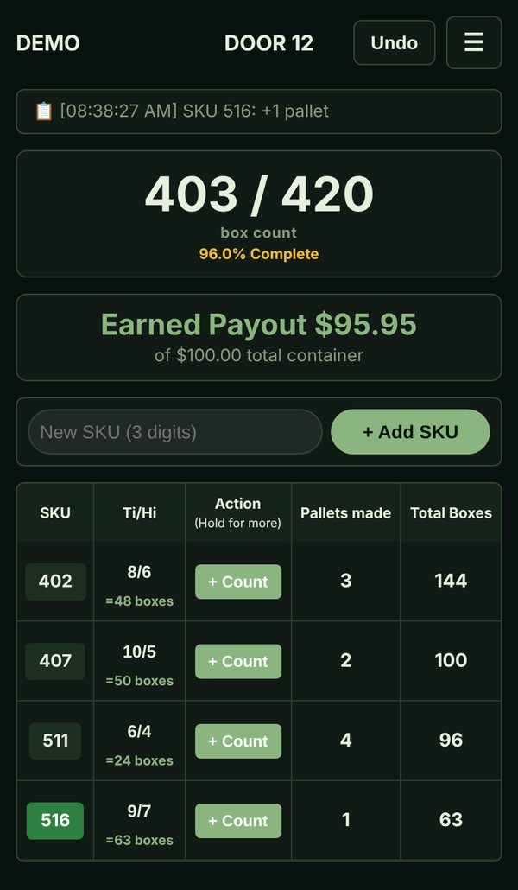

LPT
About a week after starting a warehouse job, I built LPT to count freight by SKU as a trailer is unloaded. You set each pallet's tie and high, tap Count, and it keeps a running total against the manifest. Two coworkers started using it on their own.
The pattern I noticedThe manifests were off roughly half the time, and pay was split by a percentage with no box count behind it.
